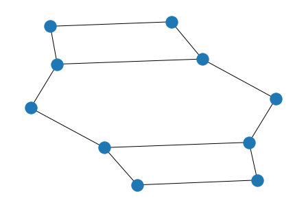
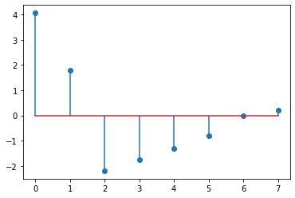

Basics of The Adjacency Matrix
This summarizes my initial set of basic notes surrounding the adjacency matrix representation of a graph
There are multiple ways of representing graph-structured data. One of the most common ways is using the adjacency matrix, where connections between nodes are represented in a row-column format.
For example:
$$
A = \begin{bmatrix}
0 & 1 & 0 \\
1 & 0 & 1 \\
0 & 1 & 0
\end{bmatrix}
$$
$A$ is a matrix with three nodes, with connections between nodes $(1,0)$ and $(1,2)$
# function to plot networks
import numpy as np
import networkx as nx
import tensorflow as tf
import numpy as np
import sympy as sym
from bokeh.io import output_file, show, output_notebook
from bokeh.models import (BoxSelectTool, Circle, EdgesAndLinkedNodes, HoverTool,
MultiLine, NodesAndLinkedEdges, Plot, Range1d, TapTool)
from bokeh.palettes import Spectral4
from bokeh.plotting import from_networkx
def plot_graph(A, name):
output_notebook()
G=nx.from_numpy_matrix(A)
plot = Plot(width=400, height=400,
x_range=Range1d(-1.1,1.1), y_range=Range1d(-1.1,1.1))
plot.title.text = name
plot.add_tools(HoverTool(tooltips=None), TapTool(), BoxSelectTool())
graph_renderer = from_networkx(G, nx.circular_layout, scale=1, center=(0,0))
graph_renderer.node_renderer.glyph = Circle(size=15, fill_color=Spectral4[0])
graph_renderer.node_renderer.selection_glyph = Circle(size=15, fill_color=Spectral4[2])
graph_renderer.node_renderer.hover_glyph = Circle(size=15, fill_color=Spectral4[1])
graph_renderer.edge_renderer.glyph = MultiLine(line_color="#CCCCCC", line_alpha=0.8, line_width=5)
graph_renderer.edge_renderer.selection_glyph = MultiLine(line_color=Spectral4[2], line_width=5)
graph_renderer.edge_renderer.hover_glyph = MultiLine(line_color=Spectral4[1], line_width=5)
graph_renderer.selection_policy = NodesAndLinkedEdges()
graph_renderer.inspection_policy = EdgesAndLinkedNodes()
plot.renderers.append(graph_renderer)
show(plot)
Isomorphism#
Graphs which exist in the same form, but which are labelled differently
Simple Example#
A = np.matrix('''
0 1 0;
1 0 1;
0 1 0
''')
G = nx.from_numpy_matrix(A)
nx.draw(G, with_labels=True)

Using a permutation matrix $P$, we can derive another graph isomorphic to the original. Row-number specifies the original node to operate on, column number specifies what number this node is renumbered to
P = np.matrix('''
0 1 0;
1 0 0;
0 0 1
''')
# matrix multiplication with numpy
A_perm = P @ A @ P.T
nx.draw(nx.from_numpy_matrix(A_perm), with_labels=True)

Complex Example#
# create adjacency matrix (undirected)
A = np.array([
[0, 1, 1, 0, 0, 0, 0, 1],
[1, 0, 1, 1, 1, 0, 0, 1],
[1, 1, 0, 1, 0, 0, 0, 0],
[0, 1, 1, 0, 1, 1, 0, 1],
[0, 1, 0, 1, 0, 1, 1, 1],
[0, 0, 0, 1, 1, 0, 1, 0],
[0, 0, 0, 0, 1, 1, 0, 0],
[1, 1, 0, 1, 1, 0, 0, 0],
])
array([[0, 1, 1, 0, 0, 0, 0, 1],
[1, 0, 1, 1, 1, 0, 0, 1],
[1, 1, 0, 1, 0, 0, 0, 0],
[0, 1, 1, 0, 1, 1, 0, 1],
[0, 1, 0, 1, 0, 1, 1, 1],
[0, 0, 0, 1, 1, 0, 1, 0],
[0, 0, 0, 0, 1, 1, 0, 0],
[1, 1, 0, 1, 1, 0, 0, 0]])
# permutation matrix (exactly 1 value equal to 1 in each row and column)
P = np.array([
[0, 0, 0, 1, 0, 0, 0, 0],
[0, 0, 1, 0, 0, 0, 0, 0],
[0, 0, 0, 0, 1, 0, 0, 0],
[0, 0, 0, 0, 0, 1, 0, 0],
[0, 1, 0, 0, 0, 0, 0, 0],
[1, 0, 0, 0, 0, 0, 0, 0],
[0, 0, 0, 0, 0, 0, 1, 0],
[0, 0, 0, 0, 0, 0, 0, 1]
])
array([[0, 0, 0, 1, 0, 0, 0, 0],
[0, 0, 1, 0, 0, 0, 0, 0],
[0, 0, 0, 0, 1, 0, 0, 0],
[0, 0, 0, 0, 0, 1, 0, 0],
[0, 1, 0, 0, 0, 0, 0, 0],
[1, 0, 0, 0, 0, 0, 0, 0],
[0, 0, 0, 0, 0, 0, 1, 0],
[0, 0, 0, 0, 0, 0, 0, 1]])
A_perm = np.matmul(np.matmul(P, A), P.T)
A_perm
array([[0, 1, 1, 1, 1, 0, 0, 1],
[1, 0, 0, 0, 1, 1, 0, 0],
[1, 0, 0, 1, 1, 0, 1, 1],
[1, 0, 1, 0, 0, 0, 1, 0],
[1, 1, 1, 0, 0, 1, 0, 1],
[0, 1, 0, 0, 1, 0, 0, 1],
[0, 0, 1, 1, 0, 0, 0, 0],
[1, 0, 1, 0, 1, 1, 0, 0]])
G = nx.from_numpy_matrix(A)
G_perm = nx.from_numpy_matrix(A_perm)
nx.draw(G, with_labels=True)

nx.draw(G_perm, with_labels=True)

nx.is_isomorphic(G, G_perm)
True
Degree Matrix
Diagonal matrix containing node-degree of the $i^{th}$ node in every $(i,i)$ position
# degree matrix
nx.degree(G)
D = np.zeros((8, 8), dtype=np.uint8)
for idx, v in enumerate(A):
D[idx, idx] = np.sum(A[idx, :])
D
array([[3, 0, 0, 0, 0, 0, 0, 0],
[0, 5, 0, 0, 0, 0, 0, 0],
[0, 0, 3, 0, 0, 0, 0, 0],
[0, 0, 0, 5, 0, 0, 0, 0],
[0, 0, 0, 0, 5, 0, 0, 0],
[0, 0, 0, 0, 0, 3, 0, 0],
[0, 0, 0, 0, 0, 0, 2, 0],
[0, 0, 0, 0, 0, 0, 0, 4]], dtype=uint8)
nx.degree(G)
DegreeView({0: 3, 1: 5, 2: 3, 3: 5, 4: 5, 5: 3, 6: 2, 7: 4})
Laplacian Matrix
Basic definition: $$ \mathcal{L} = D-A $$
Interesting properties:
- Geometric multiplicity of the 0 eigenvalue is the number of connected components
- Is symmetric (mirrored across leading diagonal)
- Is positive semi-definite (has an inverse)
# unnormalized laplacian
D - A
array([[ 3, -1, -1, 0, 0, 0, 0, -1],
[-1, 5, -1, -1, -1, 0, 0, -1],
[-1, -1, 3, -1, 0, 0, 0, 0],
[ 0, -1, -1, 5, -1, -1, 0, -1],
[ 0, -1, 0, -1, 5, -1, -1, -1],
[ 0, 0, 0, -1, -1, 3, -1, 0],
[ 0, 0, 0, 0, -1, -1, 2, 0],
[-1, -1, 0, -1, -1, 0, 0, 4]])
Weight Matrix#
Like and adjacency matrix, but weight of connections are important
G = nx.from_numpy_matrix(W := np.matrix('''
0 0.54 0.14 0 0 0 0 0.47;
0.54 0 0.63 0.35 0.30 0 0 0.31;
0.14 0.63 0 0.31 0 0 0 0;
0 0.35 0.31 0 0.54 0.43 0 0.13;
0 0.30 0 0.54 0 0.54 0.62 0.54;
0 0 0 0.43 0.54 0 0.37 0;
0 0 0 0 0.62 0.37 0 0;
0.47 0.31 0 0.13 0.54 0 0 0
'''))
plot_graph(W, 'G')

# degree matrix
D = np.zeros((8, 8))
for i in range(8):
D[i, i] = np.sum(W[i])
D
array([[1.15, 0. , 0. , 0. , 0. , 0. , 0. , 0. ],
[0. , 2.13, 0. , 0. , 0. , 0. , 0. , 0. ],
[0. , 0. , 1.08, 0. , 0. , 0. , 0. , 0. ],
[0. , 0. , 0. , 1.76, 0. , 0. , 0. , 0. ],
[0. , 0. , 0. , 0. , 2.54, 0. , 0. , 0. ],
[0. , 0. , 0. , 0. , 0. , 1.34, 0. , 0. ],
[0. , 0. , 0. , 0. , 0. , 0. , 0.99, 0. ],
[0. , 0. , 0. , 0. , 0. , 0. , 0. , 1.45]])
# Laplacian
L = D - W
L
matrix([[ 1.15, -0.54, -0.14, 0. , 0. , 0. , 0. , -0.47],
[-0.54, 2.13, -0.63, -0.35, -0.3 , 0. , 0. , -0.31],
[-0.14, -0.63, 1.08, -0.31, 0. , 0. , 0. , 0. ],
[ 0. , -0.35, -0.31, 1.76, -0.54, -0.43, 0. , -0.13],
[ 0. , -0.3 , 0. , -0.54, 2.54, -0.54, -0.62, -0.54],
[ 0. , 0. , 0. , -0.43, -0.54, 1.34, -0.37, 0. ],
[ 0. , 0. , 0. , 0. , -0.62, -0.37, 0.99, 0. ],
[-0.47, -0.31, 0. , -0.13, -0.54, 0. , 0. , 1.45]])
Normalized Laplacian
$$ \textbf{L}_N = \textbf{D}^{-1/2}(\textbf{D}-\textbf{W})\textbf{D}^{-1/2} $$
All negative powers considered inverse, so: $ D^{-1/2} $ is sqrtm(inv(D))
# normalized Laplacian
from scipy.linalg import sqrtm
from numpy.linalg import matrix_power, inv
np.around(sqrtm(inv(D)) @ (D-W) @ sqrtm(inv(D)), 2)
array([[ 1. , -0.35, -0.13, 0. , 0. , 0. , 0. , -0.36],
[-0.35, 1. , -0.42, -0.18, -0.13, 0. , 0. , -0.18],
[-0.13, -0.42, 1. , -0.22, 0. , 0. , 0. , 0. ],
[ 0. , -0.18, -0.22, 1. , -0.26, -0.28, 0. , -0.08],
[ 0. , -0.13, 0. , -0.26, 1. , -0.29, -0.39, -0.28],
[ 0. , 0. , 0. , -0.28, -0.29, 1. , -0.32, 0. ],
[ 0. , 0. , 0. , 0. , -0.39, -0.32, 1. , 0. ],
[-0.36, -0.18, 0. , -0.08, -0.28, 0. , 0. , 1. ]])
Walks#
The number of walks between n amd of length K is equal to the element (m, n) of matrix A^K, walks can include vertices multiple times
Number of walks between m and n of length not higher than K is equal to (m, n) of B_k, where:
$$ \textbf{B}_K = \textbf{A} + \textbf{A}^2+…+\textbf{A}^K $$
Paths#
Walk where each vertex may be included only once, path length equal to number of edges
Distance between two vertices is shortest path length between them
Diameter#
Diameter is equal to largest distance between all pairs of vertices in graph
Connected Graphs#
If graph not conncted, it is two or more disjoint graphs with $\textbf{A}$, A for graph with M disjoint components, note zeros are vectors, block is formed only if vertex numbering follows graph components:
$$ \begin{bmatrix} \textbf{A}_1 & 0 & … & 0 \\ 0 & \textbf{A} & … & 0 \\ … & … & … & …\\ 0 & 0 & … & \textbf{A}_M \end{bmatrix} $$ and Laplacian $$ \begin{bmatrix} \textbf{L}_1 & 0 & … & 0 \\ 0 & \textbf{L} & … & 0 \\ … & … & … & … \\ 0 & 0 & … & \textbf{L}_M \end{bmatrix} $$
$$ \textbf{A} = \textbf{A}_1 \bigotimes\textbf{A}_2 $$
# Kronecker
from numpy import kron
A_1 = np.matrix('''
0 1 0 1 0;
0 0 1 1 0;
0 1 0 0 1;
1 1 0 0 1;
0 0 1 1 0
''')
nx.draw(G_1 := nx.from_numpy_matrix(A_1))
A_2 = np.matrix('''
0 1;
1 0
''')
nx.draw(G_2 := nx.from_numpy_matrix(A_2))

kron_prod = kron(A_1, A_2)
nx.draw(G_kron := nx.from_numpy_matrix(kron_prod))

Eigenvalue Stuff#
Renumbering vertices does not change graph (isomorphic)
Isomorphic graphs: if there’s a 1 to 1 mapping from one graph to another preserving the exact number of edges for every pair of nodes. Mapping is called isomorphism
Determinant of adjacency matrix $A$ = $|A|$
Theorem:
The spectrum is finite sequence of numerical invariants. We can use the spectrum instead of the graph, if we have efficient ways to encode/decode graph spectra
$$
\bold{A}\bold{u} = \lambda\bold{u}
$$
where $\lambda$ is eigenvalue, $\bold{u}$ is eigenvector
alternately: $$ (\bold{A}-\lambda\bold{I})\bold{u}=0 $$
if $det||A-\lambda I|| = 0$ then non-trivial solution exists
Characteristic polynomial $|\lambda I - A|$, eigenvalues of $A$ are zeros of the $P_G(\lambda)$.
$$ P(\lambda)=\text{det}| \bold{A}-\lambda\bold{I} | $$
$$ P(\lambda)=\lambda^N+c_1\lambda^{N-1}+…+C_N $$
Spectrum of $A$ also consist the eignenvalues(entire set $[\lambda_1,…\lambda_n])$
OR $Ax=\lambda x$ for usual decomposition
Order of $P$ is equal to number of vertices, there are $N$ eigenvalues
Sum of eigenvalues equal to sum of diagonal elements of matrix, hence $c_1 = 0$ for characteristic polynomial of $A$, $c_2$ is equal to number of edges times -1
The algebraic multiplicity of an eigenvalue is the number of times it appears as a root of the characteristic polynomial
Multiplicity of largest eigenvalue is greater than 1 for a connected graph
If all eigenvalues are distinct (multiplicity of 1): $$ \bold{AU} = \bold{U\Lambda} $$
where $\Lambda$ is diagonal with eigenvalues on the diagonal, and $\bold{U}$ is matrix of eigenvectors $\bold{u}_k$ as columns
A = np.array([
[0, 1, 1, 0, 0, 0, 0, 1],
[1, 0, 1, 1, 1, 0, 0, 1],
[1, 1, 0, 1, 0, 0, 0, 0],
[0, 1, 1, 0, 1, 1, 0, 1],
[0, 1, 0, 1, 0, 1, 1, 1],
[0, 0, 0, 1, 1, 0, 1, 0],
[0, 0, 0, 0, 1, 1, 0, 0],
[1, 1, 0, 1, 1, 0, 0, 0],
])
w,v = np.linalg.eig(A)
l = sym.Symbol(u'\u03BB') # lambda
I = np.identity(8)
# P(lambda) for above
# order equal to N
P = sym.Matrix(A- l * I).det()
P
$\displaystyle 1.0 λ^{8} - 15.0 λ^{6} - 18.0 λ^{5} + 33.0 λ^{4} + 60.0 λ^{3} + 16.0 λ^{2} - 6.0 λ$
eigenvalues = sym.solvers.solve(P) # roots of P, these are eigenvalues
eigenvalues = np.array(eigenvalues).astype(np.float32)
plt.stem(eigenvalues)


eigenvalues, eigenvectors = np.linalg.eig(A) # eigh is for symmetric matrice
eigenvalues.T # same as above
array([ 4.05972216e+00, 1.79634500e+00, -2.19294057e+00, -1.74979075e+00,
-1.32142784e+00, -7.95801735e-01, 1.12449344e-16, 2.03893733e-01])
nx.adjacency_spectrum(nx.from_numpy_matrix(A))
/home/aadi/miniconda3/envs/tf_graph/lib/python3.8/site-packages/networkx/linalg/spectrum.py:110: FutureWarning: adjacency_matrix will return a scipy.sparse array instead of a matrix in Networkx 3.0.
return sp.linalg.eigvals(nx.adjacency_matrix(G, weight=weight).todense())
array([ 4.05972216e+00+0.j, 1.79634500e+00+0.j, -2.19294057e+00+0.j,
-1.74979075e+00+0.j, -1.32142784e+00+0.j, -7.95801735e-01+0.j,
1.12449344e-16+0.j, 2.03893733e-01+0.j])
from matplotlib import pyplot as plt
plt.stem(eigenvalues)

Eigenvalue of Laplacian#
$$ \bold{L = U\Lambda U}^T $$
$\Lambda$ is diagonal matrix with Laplacian eigenvalues
$\bold{U}$ is matrix of eigenvectors (columns) with $U^{-1}$ = U^T$
import scipy
from scipy.sparse.csgraph import laplacian
L = laplacian(A)
L
array([[ 3, -1, -1, 0, 0, 0, 0, -1],
[-1, 5, -1, -1, -1, 0, 0, -1],
[-1, -1, 3, -1, 0, 0, 0, 0],
[ 0, -1, -1, 5, -1, -1, 0, -1],
[ 0, -1, 0, -1, 5, -1, -1, -1],
[ 0, 0, 0, -1, -1, 3, -1, 0],
[ 0, 0, 0, 0, -1, -1, 2, 0],
[-1, -1, 0, -1, -1, 0, 0, 4]])
L_eigenvals = np.linalg.eigvals(L)
plt.stem(L_eigenvals)

plt.stem(L_eigenvectors[0])